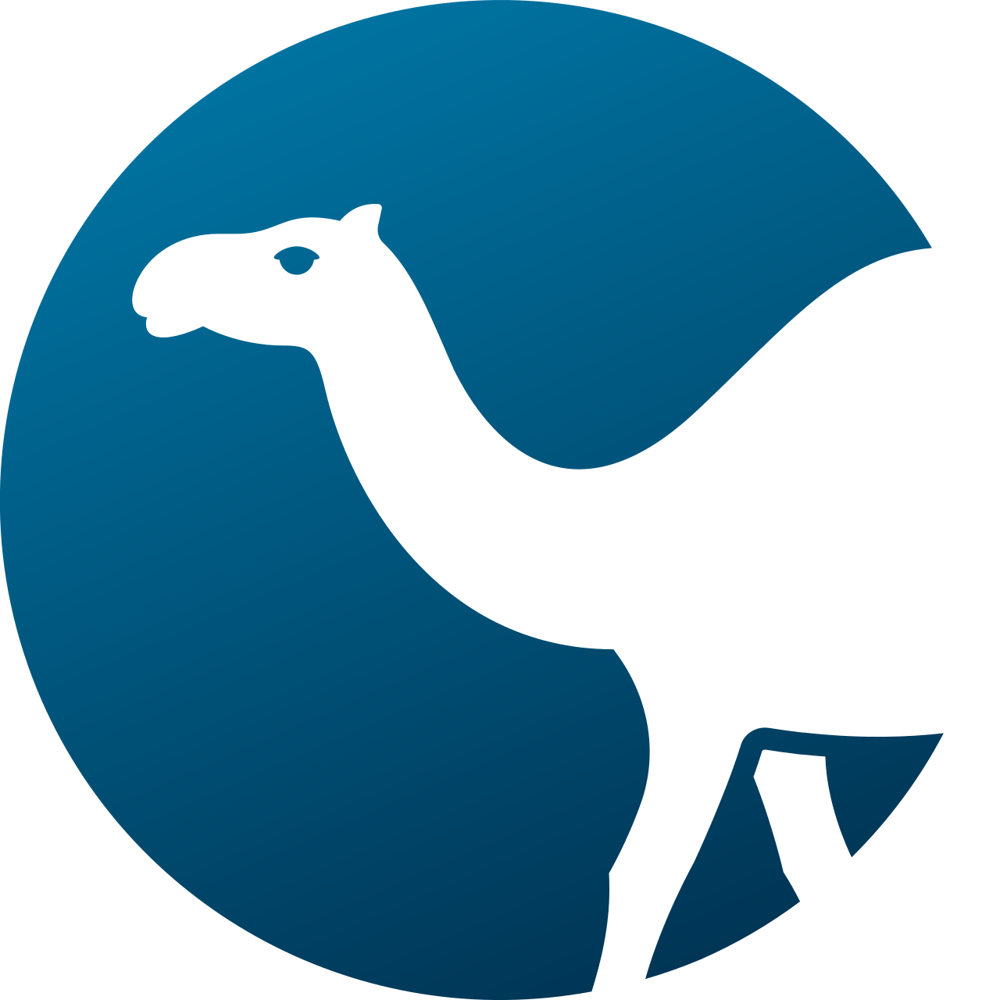
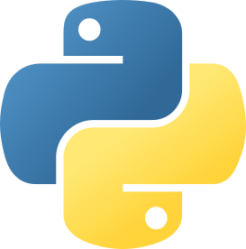
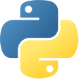
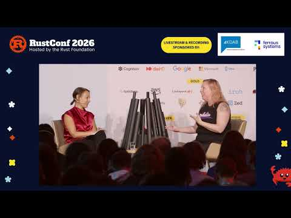
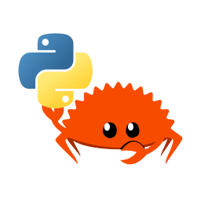

Rust's Influence on
C++ and Python:
Shaping the future of
three communities
Cristián
maureira.dev
@cmaureir


Programming languages


We all end up learning
a few languages
and that's crucial


Rust is great
but...😨
it is not the endgame
You already know this part
memory safety issues
security bugs, likewise
2019 to 2025
In the Linux and Windows kernels, certified for cars (ASIL D), four editions without breakage, "most admired" every year... (no need to convince you)
Sources: Matt Miller / BlueHat IL 2019 (Microsoft), Chromium memory safety page (2020), Google, "Rust in Android: move fast and fix things" (Nov 2025). RustConf 2026: "The Safety-Critical Rust Consortium Two Years In" (Pete LeVasseur)
So what's left to worry about? 🤔
Much of Rust's next decade
will be shaped outside Rust
...and the Rust community has a crucial role to play there.
Meet your neighbours
Pushed to be memory safe, without breaking everything 😬

Getting from Rust what C couldn't give it

What's happening in C++ and Python, and why do they need you?
C++ and Python communities are much bigger
PyPI serves in ~4 months what crates.io has served ever
SlashData Developer Nation, Q1 2025. pypi.org, crates.io, top-pypi-packages, October 2026
So what's the motivation for this?
Part oneThe C++ safety crisis
C++ has been working on safety
for a long time
- 1998–2008
- RAII,
auto_ptr; JSF++ (2005) and MISRA C++ (2008) coding rules - 2011–14
- "Modern C++": smart pointers, move semantics
- 2012
- Sanitizers: AddressSanitizer in Clang and GCC
- 2015
- Core Guidelines, GSL, Lifetime Profile (never delivered)
- 2024–26
- Hardened libc++, C++26 hardened standard library
- 2022–24
- NSA, CISA, White House: memory safe roadmaps, Rust among the alternatives
- 2026–27
- EU Cyber Resilience Act: on companies shipping C++ and Rust
C++'s answers, 1/3: Profiles
// proposed syntax (P3081 / P3589), still in flux
[[profiles::enforce(bounds_safety)]];
[[profiles::enforce(type_safety)]];
void fill(std::span<int> s, int* raw) {
s[10] = 0; // bounds-checked at runtime
raw[1] = 0; // rejected: raw pointer subscript
[[profiles::suppress(bounds_safety)]]
raw[1] = 0; // explicit, greppable opt-out
}
Same C++, stricter rules
Profiles
- Stroustrup, Sutter
- Opt-in subsets: bounds, type, lifetime
- No new syntax or stdlib
- Committee's direction, but not in C++26
- C++26 instead: hardened stdlib, erroneous behaviour
C++'s answers, 2/3: Safe C++ / Circle
#feature on safety
#include <std2.h>
int main() safe {
std2::vector<int> vec { 11, 15, 20 };
for(int x : vec) {
// ill-formed: mutating vec invalidates
// the iterator of the ranged-for
if(x % 2)
mut vec.push_back(x);
}
}
A borrow checker, in C++
Safe C++ / Circle
- Sean Baxter (P3390, 2024)
- Real borrow checker:
^borrows,safefunctions - A second stdlib (
std2) - Abandoned (June 2025): Profiles won
Closest to Rust's model... too far from C++ 🫤
C++'s answers, 3/3: Carbon
import Cpp library "<vector>";
fn Run() {
var x: Cpp.std.vector(i32) = (1, 20, 300);
var p: i32* = &x[0];
x.push_back(4000);
Core.Print(*p);
// error: use of `p` after it was invalidated
// by `x.push_back(4000)`
}
class buf(T:! type) {
disjoint owned ^Elts of T;
fn PushBack(ref self, x: T) invalidate(^Elts);
}
Strict Carbon, checking C++ code
Carbon
- Google, 2022: successor, not dialect
- C++ interop is the whole point
- Compile-time UAF and data-race checks, without exclusive
&mut - Plan: Permissive → strict mode
- NDC TechTown 2026 (Carruth, Levenberg)
The lesson Rust should take
- Rewriting millions of lines of C++ is very hard (...so far)
- Mixed C++/Rust codebases are here to stay
- Interop is the main thing, not a nice-to-have
- Bindings, ABI, build integration matter as much as new language features
Already on this stage last year: "Rust/C++ Interop: Carcinization or Intelligent Design?" (Victor Ciura), EuroRust 2025
C/C++ interop is already in your Cargo.lock
cc downloads4,221 direct dependents
bindgen downloads3,039 direct dependents
cxx downloads373 direct dependents
Your Rust binary often contains C and C++, and its bugs
crates.io, all-time downloads and direct reverse dependencies, October 2026
Interop is getting a lot of attention
bindgen- C/C++ headers → Rust FFIcxx- safe bridge, both sides declaredautocxx:bindgen+cxx, from Chromiumcrubit- bidirectional, Google's monorepozngur- Rust types exposed to C++diplomat- one Rust API → C++, JS, Dart..., from ICU4X
Who is investing
- Google: $1M, Interop Initiative (2024)
- Rust Project: a goal since 2025
- Google, Mozilla: their own tools
- Adobe: 78M lines of C++, people in Rust's interop group
Six approaches, no winner yet... people really want this!
A real interop case: Qt and Rust
- Rust GUIs: still maturing and evolving (areweguiyet.com)
- Qt: a ~30-year-old codebase, 1.5M+ developers, desktop to embedded
- Accessibility, i18n, platform integration: solved
- Not rewriting Qt in Rust 😱: bindings that feel native on both sides
Qt and Rust: what was tried before
qmetaobject-rs (Woboq, 2018)
- Qt's meta-object system, via Rust macros
- Inline C++ (
cpp!): two toolchains per build - Small API, slowed down with Qt 6
CXX-Qt (KDAB, 2021)
- Built on
cxxbridge modules - C++ concepts in Rust syntax:
Pin<&mut>,extern "RustQt" - Powerful, but needs Qt, C++ and Rust
Qt Bridges: write Rust, get Qt
use qtbridge::{QApp, qobject};
#[derive(Default)]
pub struct Backend {}
#[qobject(Singleton)]
impl Backend {
#[qslot]
fn say_hello(&self) {
println!("Hello, Qt!")
}
}
fn main() {
QApp::new()
.register::<Backend>()
.load_qml(include_bytes!("Main.qml"))
.run();
}
main.rs
import QtQuick
import QtQuick.Controls
ApplicationWindow {
visible: true
width: 320
height: 120
title: "Hello from Rust"
Button {
anchors.centerIn: parent
text: "Say hello"
onClicked: Backend.say_hello()
}
}
Main.qml
More later today: "Qt Bridges: Bringing a mature C++ UI framework to
Rust", Matthias Rauter, 11:45, Main Stage
C++ and you (1/2)
What they need from you
- Users, bugs, docs:
cxx,zngur,crubit,diplomat - Rust experience in Profiles and Carbon debates
- Material for C++ devs: idioms, not "RIIR"
- Talks: Meeting C++, CppCon, C++ on Sea, NDC TechTown
C++ and you (2/2)
What you will learn from them
- Running a standards process: papers, votes, national bodies
- Keeping 40-year-old code compiling
- Certification, safety-critical heritage
- Compile-time programming, pushed far
Part twoPython's rusty revolution
Ten years of Rust in Python
- 2015
rust-cpython: first serious attempt- 2017
- PyO3 forks from it
- 2018
- maturin: wheels made trivial
- 2019
- HuggingFace
tokenizers: millions on Rust, unknowingly - 2021
cryptography3.4 adds Rust, and breaks some platforms- 2023
- pydantic v2: a Rust core
- 2024
- Astral: ruff, uv, ty. Rust as the default for tooling
- 2026
- Rust
for CPython: pre-PEP, optional
zlib-rsin 3.16
Already here last year: "Rust-Python Interoperability" workshop (Luca Palmieri), EuroRust 2025
Rust inside PyPI's top 100
are built with Rust
for the six below
on PyPI is Rust
cryptography #9 · pydantic-core #21 ·
rpds-py #49 · jiter #92 ·
watchfiles #94 · ruff #96
Extension authors choosing Rust: 27% → 33% in one year
top-pypi-packages, 30 days to 2026-10-01. David Hewitt, Python Language Summit 2025. JetBrains, State of Python 2025
Python's users are your users
rpds-py on PyPI
470M
downloads, last 30 days
One month on PyPI > the crate's whole life 😵
rpds-py ← jsonschema ← half of PyPI
(a transitive dependency nobody chose)
pypistats.org and crates.io, October 2026
...and rpds is not alone
| Crate | crates.io all time |
PyPI last 30 days |
Pulled in by (e.g.) |
|---|---|---|---|
rpds |
19.7M | 470M | jsonschema |
jiter |
23.8M | 317M | openai, anthropic (yes, every LLM script 🤖) |
tokenizers |
38.8M | 167M | transformers, litellm, chromadb |
safetensors |
30.6M | 74M | transformers |
...and many more (try your favourite crate!)
pypistats.org and crates.io, October 2026
Why Python extensions pick Rust
over C/C++
- Distribution:
maturin→ wheels (RIP manylinux pain) - Builds: Cargo, no CMake fights
- Concurrency: hello, free-threaded Python!
- Safety: an easy yes to "is it memory safe?"
The cost of adoption
- Platforms: s390x, AIX, HPPA, BSDs... not tier 1
(ask
cryptography3.4) - Bootstrapping: a Rust toolchain, for a TLS library
- Two dependency ecosystems, one SBOM
- Skill gap: who reviews the
unsafe?
Your crate, in half of PyPI, for people who never chose Rust.
What do we owe them?
Free-threaded Python, checked by Rust
Python 3.14: a no-GIL build is officially supported, but optional (PEP 779).
Extensions that opt in must be really thread safe
use std::sync::atomic::{AtomicU64, Ordering};
#[pyclass(frozen)] // no &mut self: must be Sync
struct Counter { hits: AtomicU64 }
#[pymethods]
impl Counter {
fn hit(&self) -> u64 {
self.hits.fetch_add(1, Ordering::Relaxed) + 1
}
}
#[pymodule(gil_used = false)] // "safe for free-threaded Python"
fn demo(m: &Bound<'_, PyModule>) -> PyResult<()> {
m.add_class::<Counter>()
}
No GIL: C promises, Rust checks it
Rust and Python, working together officially

Rebecca Rumbul & Deb Nicholson, "Fireside Chat - Stewarding Rust & Python", RustConf 2026

Rust for CPython initiative
github.com/Rust-for-CPython
"Project Update: Bringing Rust into Python" (Tomáš Šedovič), RustConf 2026
Python and you (1/2)
What they need from you
- PyO3 and maturin for free-threaded Python
- Rust reviewers for Rust for CPython
unsafereviews in Python packages- Adoption costs: platforms, distros, bootstrapping
- Talks: EuroPython, PyCon, PyData
Python and you (2/2)
What you will learn from them
- Teaching culture: sprints, PyLadies, beginners first
- Stable ABI (
abi3), wheels for everyone - Governance at scale: PEPs, Steering Council
- Python 2 → 3: what a breaking change can cost
- Big migrations in phases: removing the GIL (PEP 703, 779)
- Funding beyond one foundation: NumFOCUS, fiscal sponsorship
Part threeInfluence is a three-way street
Before Rust, C++ built Python's growth
- Science: SciPy, scikit-learn, OpenCV
- Machine learning: PyTorch, TensorFlow: C++ cores, Python APIs
- GUIs: PySide (Qt for Python), PyQt
- Bindings: Boost.Python → pybind11 → nanobind
Python as the interface, C++ as the engine... and now Rust joins in
...but that's a talk for another conference 😉
Three kinds of influence
| C++ | Python | |
|---|---|---|
| Code | Rust linked into Chromium and Android | Rust wheels on PyPI, zlib-rs proposed for CPython |
| Design | Safe C++ and Carbon borrow ownership ideas | uv is "Cargo for Python", ruff errors look like rustc |
| Politics | Governments name Rust, Profiles respond | PSF and Rust Foundation prepare for the CRA together |
Every newcomer arrives
with expectations
enough of them, and they don't adapt to the language...
they change it.
What they asked for, and what Rust did (1/2)
From C++
- "Is there a standard?" → FLS, adopted by the Rust project ✅
- "Can it be certified?" → Ferrocene, Safety-Critical Rust Consortium ✅
- "Does it build with CMake / Bazel?" → Corrosion, rules_rust ✅
- "Can it be const?" → const generics ✅, const traits ⏳
- "Custom or fallible allocation?" →
try_reserve✅,Allocator✅ (1.100, Nov) - "Is the ABI stable?" → crABI, stalled since 2023 ❓
What they asked for, and what Rust did (2/2)
From Python
- "Why is it so slow to compile?" → parallel front-end, Cranelift ⏳
- "Which crate do I use?" → no official answer ❓
- "Why three ways to do this?" → errors, async runtimes ❓
- "Can I just run a file? (PEP 723)" →
cargo script, blocked ⏳
C++ already changed Rust. Python is still waiting
Rust's influence, visible: rustc vs. ruff
warning: unused import: `std::fs`
--> src/main.rs:1:5
|
1 | use std::fs;
| ^^^^^^^
|
= note: `#[warn(unused_imports)]`
on by default
rustc
F401 [*] `os` imported but unused
--> main.py:1:8
|
1 | import os
| ^^
|
help: Remove unused import: `os`
ruff
(live example)
OK... now back to reality
Rust is filling gaps neither neighbour
can close
- C++: safety vs. compatibility (its reason to exist)
- Python: speed vs. a 30-year-old C API
- Rust is where both meet: an opportunity, not a victory
Part fourWhat to watch
To watch (1/3): C++ and Python
- Will C++ Profiles deliver?
- If they do, C++ stays and interop matters even more.
- If not, more C++ teams turn to Rust.
- Free-threaded Python and CPython:
- PyO3 needs concurrency answers, and Rust has them.
- Rust may land in CPython 3.16 (
zlib-rs, proposed)
To watch (2/3): same problems, shared answers
Regulation
The EU CRA puts companies shipping Python, C++ and Rust on the hook,
and they will ask upstream for SBOMs and fixes.
Supply chain
PyPI pioneered Trusted Publishing (2023); crates.io adopted it (2025).
Build systems
Rust usually joins an existing CMake, Bazel or Python build. The better
Cargo fits in, the easier Rust gets adopted.
Open source foundations' joint CRA effort (Apr 2024). crates.io development update (Jul 2025). RustConf 2026: "TARmageddon: Reflections on a Multi-Crate CVE" (Alex Zenla)
To watch (3/3): at home
- Funding: half of PyPI now rests on crates kept by a few maintainers. Who pays them?
- More newcomers: C++ teams with safety roadmaps, Python developers writing extensions. Are we ready? 🤔
RustConf 2026: "Project Goals : Funding :: Chocolate : Peanut Butter" (Nicholas Matsakis)
The Rust community is
becoming heterogeneous
But a big community is harder to care for
So, after this conference
- 🐍 PyO3 free-threading, Rust for CPython reviews
- 🔗 Use, report, document:
cxx,zngur,crubit, anddiplomat - 📝 Read the Carbon and Profiles designs, share what Rust learned
- 🎤 Talk at EuroPython, PyCons, Meeting C++, CppCon
- 📚 Write for Pythonistas and C++ devs. Mentor, don't gatekeep
- 🤝 Joint meetups: Python + Rust, C++ + Rust
Your neighbours are more curious
than you might think
Most C++ and Python developers are open, and many already trust Rust 💜
Reach out 👋: most will be glad you did 🦀
...and with that, please
Look at your neighbours
They are already looking at you
Rust's Influence on C++ and Python:
Shaping the future of three communities
Dr. Cristián Maureira-Fredes
maureira.dev
@cmaureir
cmaureir.github.io/eurorust2026